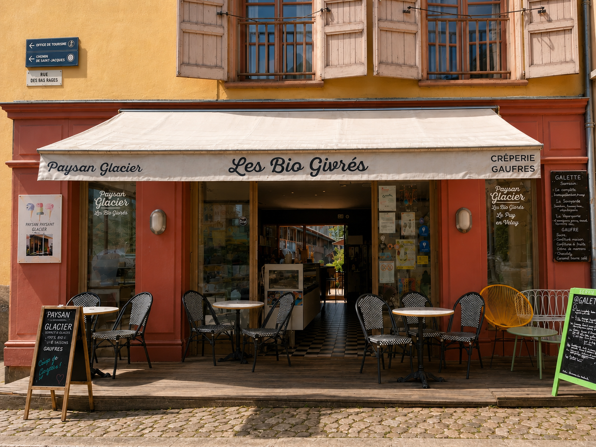
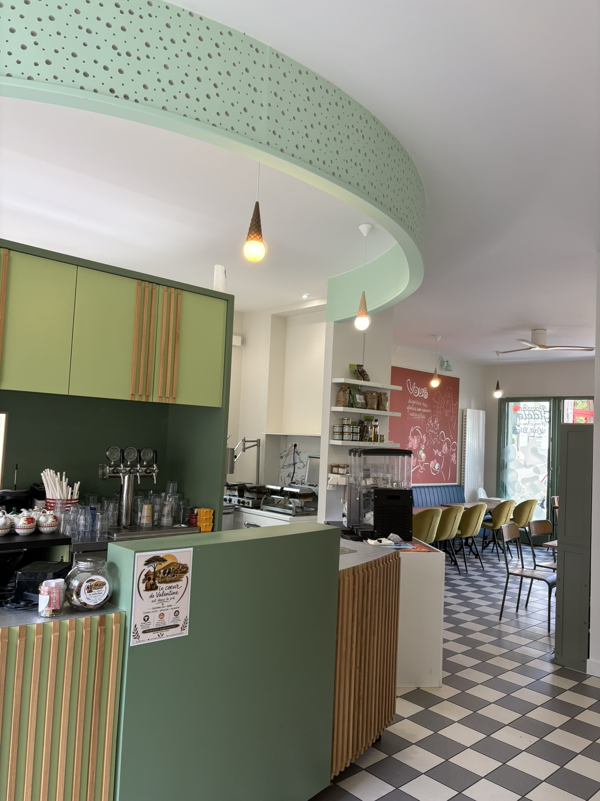
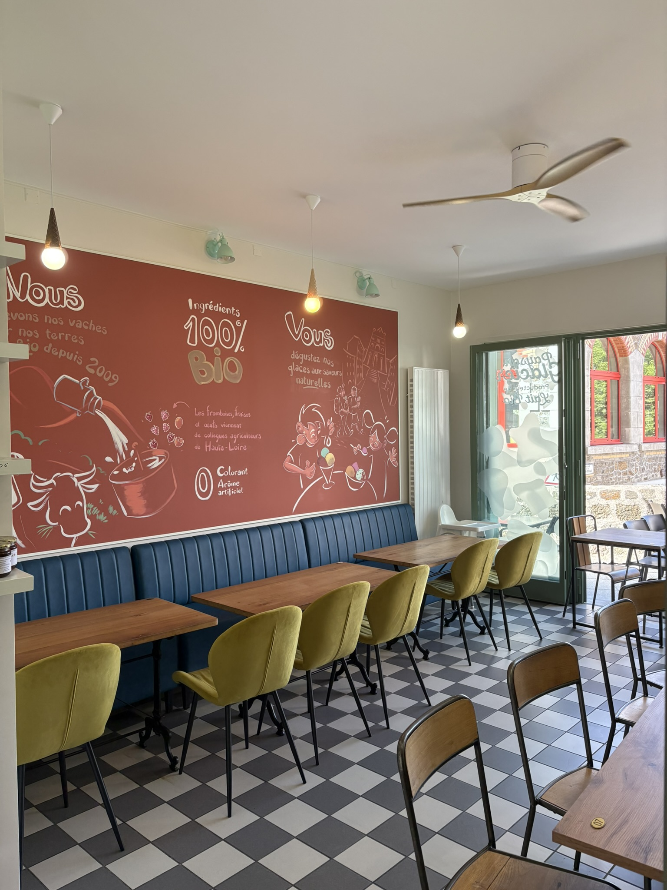
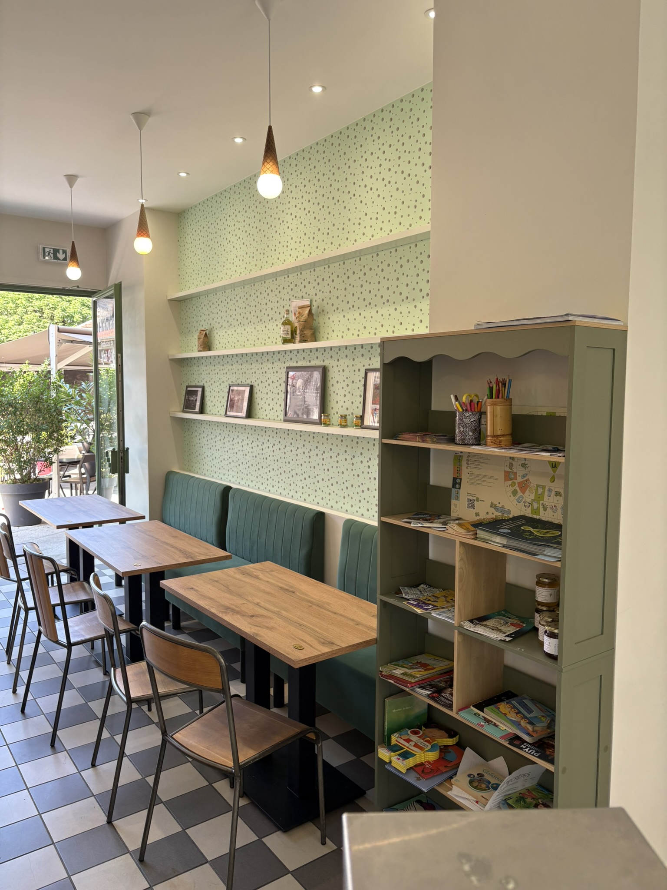
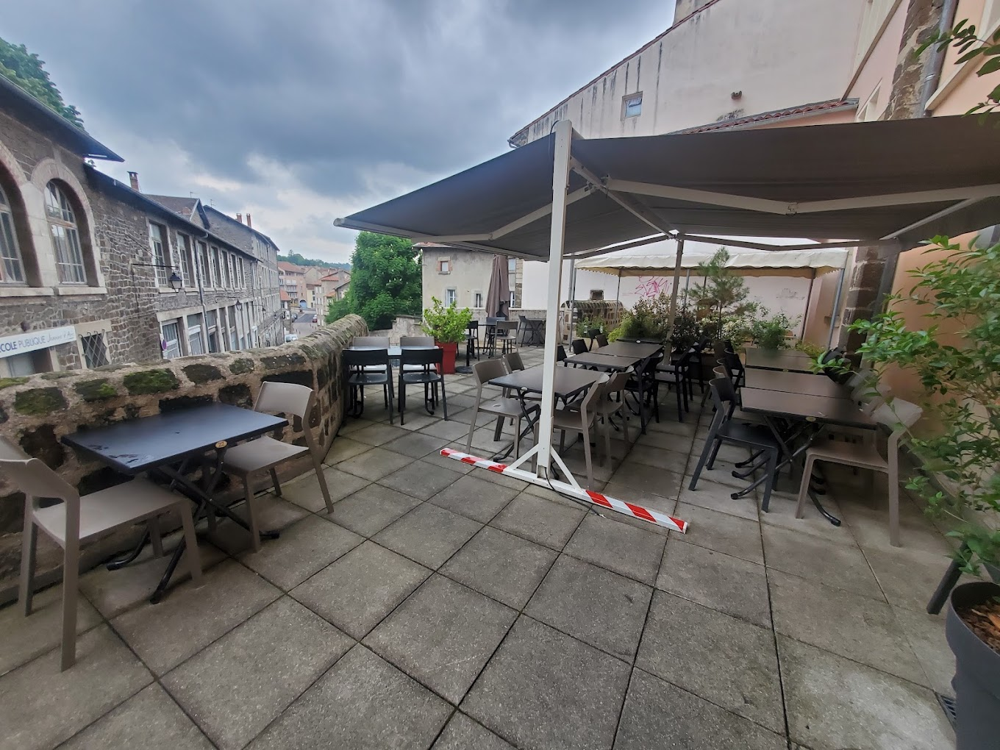

Nous rendre visite
On se retrouve à la terrasse ou à la ferme?
Pour une commande, une question ou simplement l’envie de goûter nos glaces, contactez-nous.
La terrasse
Ouvert tous les jours
10h00 – 22h00





L’atelier
Vente directe à l’atelier.
Retrouvez-nous à Coulombs pour acheter nos glaces, sorbets, yaourts et entremets directement à la ferme.
Du lundi au samedi
16h00 – 18h00
Itinéraire vers l’atelier ↗
Coordonnées
À Coulombs
GAEC Les Bio Givrés
Coulombs
43490 Arlempdes
Du lundi au samedi
16h00 – 18h00
Vente directe à l’atelier
Paiement en espèces, par chèque ou carte bancaire.